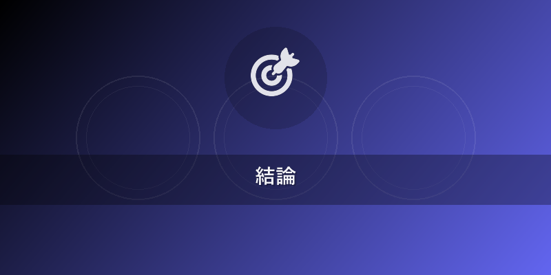
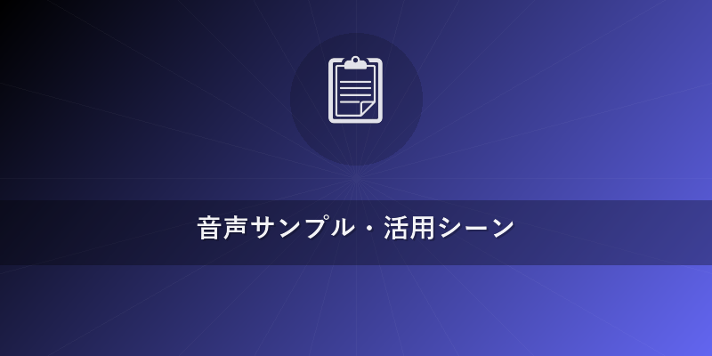
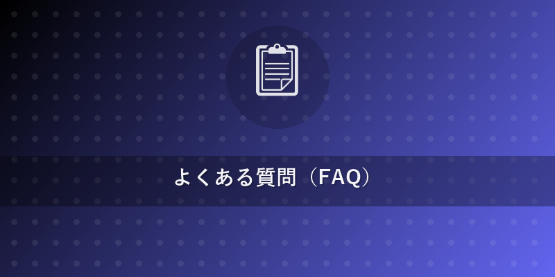

2026年最新版！ElevenLabs 使い方完全ガイド【初心者必見】
この記事でわかること
- ElevenLabsの無料登録から基本的なテキスト読み上げ（TTS）操作まで、初心者でも迷わず始められる具体的な手順
- 高品質なAI音声を生成するコツ、およびInstant Voice Cloning（ボイスクローン）の活用方法
- YouTube、ポッドキャスト、オーディオブックなど、ElevenLabsが活躍する最新の活用シーンと、他の主要AI音声ツールとの客観的な比較

結論（先に結論を述べる）
ElevenLabsは、2026年現在、自然さと表現力においてAI音声合成ツールの最前線を走っており、その使い方は初心者からプロまで直感的に操作できる設計です。無料プランから始められ、数クリックで驚くほどリアルな音声を生成できるため、コンテンツ制作の品質と効率を劇的に向上させます。特に日本語の音声品質は目覚ましい進化を遂げており、プロのナレーターに匹敵するレベルの表現が可能になっています。
本題
1. ElevenLabsの登録と無料プランで始める「使い方」
ElevenLabsを始めるのは非常に簡単です。まずはアカウントを作成し、無料プランでその強力な機能を体験してみましょう。
- ElevenLabs公式サイトへアクセス: elevenlabs.io にアクセスします。
- アカウント作成: 右上の「Sign Up」ボタンをクリック。Googleアカウント、Facebookアカウント、またはメールアドレスとパスワードで簡単に登録できます。
- 無料プランの確認: 登録後、自動的に無料プラン（Free Plan）が適用されます。無料プランでは、毎月一定文字数（2026年現在では数千～1万字程度が目安、変更される可能性あり）までのテキスト読み上げと、1つのInstant Voice Cloningスロットが提供されます。
- ダッシュボードの確認: ログイン後、直感的なダッシュボードが表示されます。左側のメニューバーから「Speech Synthesis」（テキスト読み上げ）や「Voice Lab」（ボイスクローン）にアクセスできます。
ポイント: 無料プランはElevenLabsの基本的な使い方を学ぶのに最適です。まずはここで様々な音声や設定を試して、その品質を実感してください。
2. テキスト読み上げ（TTS）の基本操作：自然な音声の作り方
ElevenLabsの最も基本的な機能がテキスト読み上げです。ここでは、自然で表現豊かな音声を生成するための具体的な使い方を解説します。
- 「Speech Synthesis」への移動: ダッシュボードの左メニューから「Speech Synthesis」を選択します。
- AIボイスの選択:
- 画面上部の「Voice settings」の下にあるドロップダウンメニューから、使用したいAIボイスを選択します。ElevenLabsは多種多様なボイス（性別、年齢、声質、言語）を提供しており、日本語対応のボイスも豊富です。
- 「Eleven Multilingual v2」などの最新モデルを選択することで、より自然な日本語音声を生成できます。
- テキストの入力: 中央のテキストボックスに、読み上げさせたい日本語のテキストを入力します。長文の場合は、複数の段落に分割して入力すると、途中で調整しやすくなります。
- 音声設定の調整（上級者向け調整）：
- Stability: 音声の感情表現のばらつきを調整します。低くするとより表現豊かに、高くすると安定した読み方になります。物語調には低め、ニュース読み上げには高めが適しています。
- Clarity + Similarity Enhancement: 音声の明瞭さと、特定の声の個性を維持する度合いを調整します。ボイスクローンで重要な設定です。
- Style Exaggeration: 音声のスタイル（抑揚、トーンなど）をどの程度強調するかを調整します。特に感情表現豊かな文章で効果を発揮します。
- Speaker Boost: 複数話者での会話で、個々の声の聞き取りやすさを向上させます。この機能は特にポッドキャストやオーディオブック作成で役立ちます。
- 音声の生成: 設定が完了したら、右下の「Generate」ボタンをクリックします。数秒で音声が生成され、再生ボタンで試聴できます。
- 音声のダウンロード: 生成された音声に問題がなければ、ダウンロードアイコンをクリックしてMP3形式で保存します。
ヒント: 長文を生成する際は、「Projects」機能を利用すると、より大規模な音声コンテンツを効率的に管理・生成できます。{{internal_link:ElevenLabs Projects活用術}}を参考にしてください。
3. Instant Voice Cloning（ボイスクローン）の「使い方」と活用
ElevenLabsの目玉機能の一つがボイスクローンです。わずか数分の音声サンプルから、あなたの声を学習し、その声でどんなテキストでも読み上げさせることができます。これはElevenLabsの使い方の中でも特にクリエイターにとって革新的な機能です。
- 「Voice Lab」への移動: ダッシュボードの左メニューから「Voice Lab」を選択します。
- 「Add voice」をクリック: 「Instant Voice Cloning」セクションにある「Add voice」ボタンをクリックします。
- 音声サンプルのアップロード:
- 「Upload your own voice」を選択し、クローンしたい声の音声ファイル（MP3, WAVなど）をアップロードします。
- 重要なポイント: 高品質なボイスクローンを作成するには、1分以上のクリアな音声サンプルが理想的です。背景ノイズがなく、明瞭に話している音声を選びましょう。複数の異なるトーンや速度のサンプルを組み合わせると、より自然な声が生成されやすくなります。
- ボイス名の設定: クローンする声に識別しやすい名前を付けます。
- 「Add voice」で追加: 「Add voice」ボタンをクリックしてクローンプロセスを開始します。
- クローンされた声の使用: Voice Labにクローンされた声が表示されたら、Speech Synthesisに戻り、ボイス選択ドロップダウンから新しく追加されたクローン声を選択して、テキストを読み上げさせることができます。
補足: より高品質なボイスクローンを求める場合は、「Professional Voice Cloning」が提供されていますが、こちらは通常、より長時間の音声データとElevenLabsチームによるレビューが必要となり、料金プランも異なります。商用利用やプロフェッショナルなコンテンツにはこちらを検討すると良いでしょう。

音声サンプル・活用シーン
ElevenLabsは、その高い音声品質から多様なメディアコンテンツ制作で活躍しています。ここでは具体的な活用シーンをご紹介します。
- YouTube動画のナレーション: ゲーム実況、解説動画、Vlog、ビジネス系コンテンツなど、声出しなしでプロフェッショナルなナレーションを追加できます。声のトーンや速度を自由に調整できるため、コンテンツの雰囲気に合わせた最適な音声を作り出せます。
- ポッドキャストの制作: 番組の導入部、CMパート、ゲスト声の代役、複数話者での会話シミュレーションなどに活用。特にボイスクローンを使えば、パーソナリティの声で一貫した番組イメージを維持できます。
- オーディオブックの制作: 小説、ビジネス書、自己啓発書など、あらゆるジャンルの書籍を高品質な音声で提供。声優を雇うコストと時間を大幅に削減し、多言語対応も容易になります。
- eラーニング・企業研修コンテンツ: 専門用語の多い解説や、繰り返し聞く必要のあるトレーニング教材において、明瞭で聞き取りやすい音声を提供。受講者の理解度向上に貢献します。
- ゲーム・アプリのキャラクターボイス: 予算やスケジュールの制約があるインディーゲーム開発や、多数のキャラクターボイスが必要なアプリ開発において、迅速かつ高品質な音声を提供します。
- IVR（自動音声応答）システム: 顧客対応の電話システムにおいて、親しみやすく自然なAI音声でスムーズな案内を実現します。
これらの活用シーンは、ElevenLabsの使い方をマスターすることで、あなたのクリエイティブな可能性を大きく広げることでしょう。
他のAI音声ツールとの比較
ElevenLabsが業界の最先端を走る一方で、Amazon Polly、Google Cloud TTS、Azure Speech、VOICEVOXといった他の優れたAI音声ツールも存在します。それぞれの特徴を比較してみましょう。
| 特徴 | ElevenLabs（2026年） | Amazon Polly | Google Cloud TTS | Azure Speech | VOICEVOX（日本語特化） |
|---|---|---|---|---|---|
| 音声品質 | 非常に高い（特に表現力と自然さ、感情表現が秀逸） | 高い（安定した品質、多くのボイス） | 高い（DeepMind技術、自然な声） | 高い（多様なカスタムボイス、感情表現） | 高い（無料・商用利用可能、多様なボイス、調整機能） |
| 日本語対応 | 非常に優れる（多言語モデルにより自然な日本語） | 優れる（豊富な標準ボイス、一部Neuralボイス） | 優れる（WaveNet、Standardボイス） | 優れる（Neuralボイス、カスタム） | 非常に優れる（完全日本語特化、無料） |
| ボイスクローン | 瞬時クローン（Instant Voice Cloning）が強力、プロ版も | 不可（一部Custom Voicesサービスで類似機能） | 不可（一部Custom Voicesサービスで類似機能） | 可能（Custom Neural Voiceとして提供、高品質） | 不可（既存ボイスの活用） |
| 感情表現・抑揚 | 極めて優れる（Stability, Style Exaggerationなどで詳細調整） | SSMLで調整可能（限定的） | SSMLで調整可能（限定的） | SSMLで調整可能（比較的豊富） | 比較的優れる（イントネーション、速度調整など） |
| APIの柔軟性 | 非常に優れる（開発者向けドキュメントが充実） | 優れる（AWSエコシステムとの連携） | 優れる（Google Cloudエコシステムとの連携） | 優れる（Azureエコシステムとの連携） | 優れる（Pythonなどのライブラリ、GUI） |
| 無料枠/料金体系 | 無料プランあり（月間文字数制限）、有料プランは従量課金＋定額 | 無料枠あり（制限あり）、従量課金 | 無料枠あり（制限あり）、従量課金 | 無料枠あり（制限あり）、従量課金 | 完全無料（商用利用可能） |
| 主な利用者層 | クリエイター、コンテンツ制作者、開発者、個人利用 | 企業、開発者、大規模サービス | 企業、開発者、大規模サービス | 企業、開発者、大規模サービス | 個人クリエイター、VTuber、小規模コンテンツ制作者 |
| 使いやすさ | 非常に直感的（Web UIが優れている） | 開発者向け（コンソール操作、API） | 開発者向け（コンソール操作、API） | 開発者向け（ポータル操作、API） | GUIツールが提供され、比較的容易 |
総評: * ElevenLabs: 自然な感情表現と強力なボイスクローン機能で、特にクリエイターやコンテンツ制作者に最適です。直感的なWeb UIにより、AI音声合成が初めてのユーザーでも簡単に使いこなせるでしょう。{{internal_link:AI音声合成比較ガイド}}でさらに詳細な情報も確認できます。 * Amazon Polly, Google Cloud TTS, Azure Speech: 大規模なシステム連携や、安定した品質が求められる企業向けソリューションとして強力です。開発者向けのAPIが充実しています。 * VOICEVOX: 日本語に特化しており、完全無料で利用できる点が最大の魅力です。個人クリエイターやVTuberなど、手軽に高品質な日本語音声を使いたい場合に最適です。

よくある質問（FAQ）
Q1: ElevenLabsの無料プランでできることにはどのような制限がありますか？
A1: ElevenLabsの無料プランでは、通常、毎月一定文字数（2026年現在では約数千〜1万字程度ですが、変動する可能性があります）までのテキスト読み上げと、1つのInstant Voice Cloningスロットが提供されます。生成できる音声の品質や機能自体に大きな制限はありませんが、文字数制限を超えると有料プランへのアップグレードが必要になります。無料プランはElevenLabsの強力な機能を試すには十分です。
Q2: ElevenLabsで生成した音声は商用利用できますか？
A2: はい、ElevenLabsの有料プランに加入している場合、生成した音声は商用利用が可能です。無料プランの場合、利用規約で商用利用が制限されている場合がありますので、必ず最新のElevenLabs利用規約を確認してください。特にボイスクローン機能を用いて生成した音声の商用利用については、対象となるプランと規約の遵守が求められます。
Q3: 日本語のテキスト読み上げの精度はどのくらいですか？イントネーションは自然ですか？
A3: 2026年現在、ElevenLabsの日本語テキスト読み上げの精度は非常に高く、イントネーションや感情表現も極めて自然です。特に「Eleven Multilingual v2」のような最新の多言語モデルは、日本語の複雑な抑揚や間をうまく再現し、人間が話しているかのような流暢さを実現しています。StabilityやStyle Exaggerationといった詳細設定を調整することで、さらに自然さや表現力を高めることが可能です。
おすすめサービス・ツール
この記事で紹介した内容を実践するために、以下のサービスがおすすめです。
- ElevenLabs - ElevenLabsに登録する
- Amazon - AmazonでAI音声関連書籍を探す
- 楽天ブックス - 楽天でAI音声関連書籍を探す
※ 上記リンクからご利用いただくと、サイト運営の支援になります。
まとめ
ElevenLabsは、2026年におけるAI音声合成技術の最前線を走る革新的なツールです。この記事を通じて、無料登録からテキスト読み上げ、ボイスクローンまで、ElevenLabsの基本的な使い方と、そのポテンシャルを深くご理解いただけたことと思います。特にその圧倒的な音声品質と、直感的なインターフェースは、初心者からプロのクリエイター、開発者まで、あらゆるユーザーにとって大きな価値をもたらします。
YouTube動画のナレーション、ポッドキャスト、オーディオブック、eラーニングなど、あなたのコンテンツ制作の幅を広げ、視聴者やリスナーにこれまで以上の体験を提供してくれるでしょう。他のAI音声ツールと比較しても、感情表現の豊かさやボイスクローン機能の使いやすさで頭一つ抜けています。
さあ、今日からElevenLabsをあなたのクリエイティブワークに取り入れて、AI音声の無限の可能性を体験してみませんか？まずは無料プランから始めて、その驚異的な能力を実感してください。{{internal_link:ElevenLabsでできること}}をさらに深掘りして、あなたのアイデアを形にしましょう！